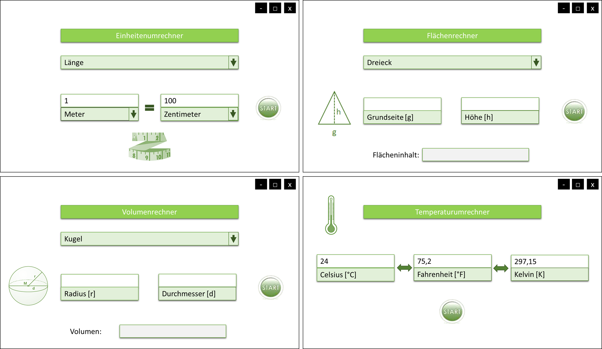

Projekt: (Um-)Rechnungstool
Semester: SS 2022
Teammitglieder:
- Beatriz Aiza Rocha (beatriz.rocha@hs-furtwangen.de)
- Jasmin Binkowski (jasmin.helene.binkowski@hs-furtwangen.de)
- Sophia Hug (sophia.hug@hs-furtwangen.de)
- Luca Wieland (luca.leon.wieland@hs-furtwangen.de)
- Leon Welker (leon.tenzin.welker@hs-furtwangen.de)
1. Projekt-Beschreibung
Das Projekt bietet dem Anwender vielfältige
Möglichkeiten zur einfachen Umrechnung verschiedener Einheiten,
sowie zur Berechnung von geometrischen und mathematischen
Größen und Formen.
Dabei wird man über ein simples Auswahlsystem auf dem
Bildschirm
zum gewünschten Umrechnungsfenster navigiert, indem man die
Umrechnung durchführen kann.
2. Features und Anforderungen
Die Aufgabe des (Um-)Rechnungstools ist es, den Anwender schnell und
einfach durch einen Pool an Um- und Berechnungsmöglichkeiten
zum
gewünschten Fenster zu navigieren, um so gezielt die
Lösung
von mathematischen und geometrischen Problemen zu ermöglichen.
Folgende Dienste sollen dabei zum Angebot stehen:
- allgemeiner Einheitenumrechner
- Flächenberechnung von zweidimensionalen
geometrischen Formen
- Volumenberechnung von dreidimensionalen geometrischen Formen
- Temperatur-Umrechnung zwischen Celsius, Kelvin und
Fahrenheit
Die Eingangsdaten sind im allgemeinen die Größe der
Einheit
und die
Dimension. Sie können aber variieren, je nachdem welches
(Um-)Rechnungsfenster geöffnet ist. So können beim
"1.
allgemeinen Einheitenumrechner" in einem Textfeld auf der linken Seite
des Fensters der Eingabewert eingegeben werden und über eine
dazugehörige Dropdown-Liste die entsprechende Einheit
ausgewählt werden. In einer weiteren Dropdown-Liste auf der
Ausgabeseite rechts, kann nun die Zieleinheit ausgewählt
werden.
Anschießend kann die Umrechnung mit einem
Button
ausgeführt werden. Das Ergebnis ist dann im Ausgabefenster zu sehen.
Die Oberfläche zur Flächen-und Volumenberechnung
bietet in
einer Dropdown-Liste zuerst die Auswahlmöglichkeit einer
gewünschten geometrischen Fläche bzw. Form. Davon
abhängig sind verschiedene Textfelder zur Eingabe der
gegebenen
Werte (z.B. Höhe, Breite, Länge, Radius, Durchmesser)
verfügbar. Im Programm werden diese mit der entsprechenden
Formel
berechnet und das Ergebnis wie oben beschrieben dann
einheitenspezifisch im Ausgabefeld dargestellt.
Bei unzulässigen oder keinen Eingaben, soll das Programm
folgendermaßen reagieren:
Wird eine gewisse Größe einer Zahl
unter- oder überschritten,
wird der errechnete Wert zur Übersicht mit einer 10er Potenz
versehen (z.B 0,1
Fuß = 3,048*10^-5 km). Sollte keine Einheit bei der Ein- oder
Ausgabe ausgewählt oder kein Eingabewert eingegeben werden, so
wird eine Fehlermeldung mit einem Hinweis beim Drücken des
"Berechne"-Buttons ausgegeben.
Die Bedienoberfläche soll im Sinne eines allgemeinen
Übersetzungstools als grafische Benutzeroberfläche
(GUI) aufgebaut
sein. Der Nutzer kann von einem
Startfenster einen der oben beschriebenen Rechner auswählen. Dies
führt zur Weiterleitung zum entsprechenden Fenster mit den oben
beschriebenen Dropdown-Fenstern, Eingabefeldern und einem
"Berechne-Button", der zur Ausgabe des Ergebnisses führt.
Zusätzlich
wird der Nutzer textuell durch eine Schritt für
Schritt-Anleitung durch
jedes Fenster geleitet.
Startfenster zum Wählen des Rechners:
Beispielfenster zu den einzelnen Rechnern:

Der Quellcode wird über die Entwicklungsumgebung Eclipse
mittels der
Programmiersprache
Java geschrieben und steht dann als Desktop-App als Systemumgebung zur Verfügung.. Eventuell kommt das Programm BlueJ zur
Fehlererkennung zum
Einsatz.
3. Architektur
.
classDiagram
class Startbildschirm {
interface button einheit(1)
interface button volumen(2)
interface button fläche(3)
interface button temperatur(4)
gehezu1()
gehezu2()
gehezu3()
gehezu4()
}
class Einheiten {
double einheit
berechne()
getLänge()
setLänge()
ausgabe()
}
class Volumen {
double volumen
berechne()
getVolumen()
setvolumen()
ausgabe()
}
class Fläche {
double fläche
double Grundseite
double hohe
berechne()
getFläche()
setFläche()
ausgabe()
}
class Temperatur {
double Temperatur
berechne()
getTemeperatur()
setTemperatur()
ausgabe()
}
class Länge {
double einheit
berechne()
getLänge()
setLänge()
ausgabe()
}
class Kapazität {
double kapazität
berechne()
getVoloumen()
setvoloumen()
ausgabe()
}
class Areal {
double areal
double Grundseite
double hohe
berechne()
getFläche()
setFläche()
ausgabe()
}
class Gewicht {
double gewicht
berechne()
getGewicht()
setGewicht()
ausgabe()
}
Einheiten <|-- Länge
Einheiten <|-- Kapazität
Einheiten <|-- Fläche
Einheiten <|-- Gewicht
Startbildschirm <|-- Einheiten
Startbildschirm <|-- Volumen
Startbildschirm <|-- Areal
Startbildschirm <|-- Temperatur
class Viereck {
double längeA
double längeB
berechne()
ausgabe()
}
class Kreis {
double radius
berechne()
ausgabe()
}
class Dreieck {
double grundseite
double hoehe
berechne()
ausgabe()
}
Areal <|-- Viereck
Areal <|-- Kreis
Areal <|-- Dreieck
class Würfel {
double länge
double breite
berechne()
ausgabe()
}
class Kugel {
double radius
berechne()
ausgabe()
}
class Pyramide {
double grundseite
double hoehe
berechne()
ausgabe()
}
Volumen <|-- Würfel
Volumen <|-- Kugel
Volumen <|-- Pyramide
4. Aufwandsschätzung und Aufteilung
Der benötigte Arbeitsaufwand wird auf ca. 320 Stunden insgesamt
geschätzt. Pro Person sind das 64 Arbeitsstunden. Zwei
Teammitglieder kümmern sich um das Layout und den Startbildschirm,
während sich die anderen drei um die Umsetzung der Software
für die Einheiten, Flächen und Volumen kümmern. Da die
Temperatur Um- beziehungsweise Berechnung in unseren Augen am wenigsten
komplex ist, wird diese am Ende integriert. Angesetzt sind dabei pro
Unterkategorie ca. 55 Stunden pp. Wir erwarten, dass das "Layout-Team"
schneller fertig ist und die anderen anschließend
unterstützt. Die letzten 45 Stunden sind als Puffer für
eventuelle Änderungen, Störungen und Bugfixes gedacht.
Beatriz : Startbildschirm (45h)
Jasmin : Volumen (50h)
Sophia : Fläche (50h)
Luca : Startbildschirm (45h)
Leon : Einheiten (50h)
___________
Rest: 80h » für Temperatur und weitere Verbesserungen